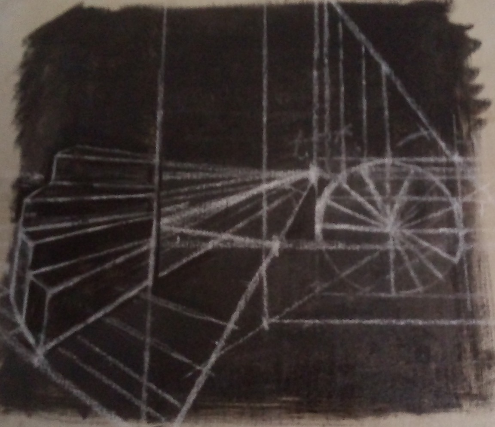

Mikor a minap kétkezi munkában foglalatoskodva a lelki ember gyakorlatain gondolkoztam, hirtelen négy lelki lépcsőfok jutott eszembe, tudniillik az olvasás, az elmélkedés, az imádság, a szemlélődés. Ez a kolostorban élők lépcsője, amelyen a földről feljuthatnak az égbe; kevés foka van, de mérhetetlenül és hihetetlenül nagyok. Alsó vége a földre támaszkodik, a felső a felhőkbe hatol, és az ég titkait kutatja. Amint névben és számban különböznek ezek a fokok, éppúgy rangjukban és szerepükben is. Ha valaki alaposan megfigyeli egyes tulajdonságaikat és feladatukat, azaz, hogy mit végeznek bennünk, hogyan különböznek egymástól és hogyan múljak felül egymást, akkor a faradságot vagy érdeklődést, amit neki szentel, kevésnek és könnyülnek fogja tálalni a belőle származó haszon és lelki édesség nagyságához képest. Az olvasás az Írásoknak figyelmes lélekkel történő, odaadó tanulmányozása. Az elmélkedés a kereső elme cselekedete, amely a rejtett igazság jelentését saját értelme vezetésével kutatja. Az imádság a szívnek alázatos Istenhez fordulása a rossz távolságtartásáért és a javak elnyeréséért. A szemlélődés az Istenbe kapaszkodó léleknek az örök édesség örömeit ízlelő, önmaga fölé való felemelkedése. Így tehát megadtuk a négy fok leírását, lássuk most a szerepkörüket.
